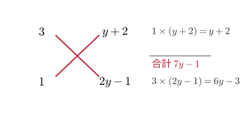
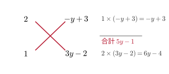
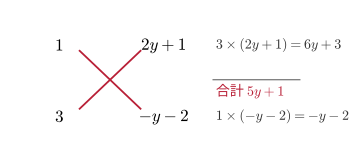

別冊練習問題 1 の解答 2文字の2次式（たすき掛け）
(1) \(3x^2+7xy+2y^2-x+3y-2\)
STEP 1 \(x\) について降べきの順に整理する
\(y\) を数と同じように扱い、\(x^2\)、\(x\)、\(x\) を含まない項に分ける。
\[3x^2+7xy+2y^2-x+3y-2=3x^2+(7y-1)x+(2y^2+3y-2)\]STEP 2 定数項（\(x\) を含まない部分）を因数分解する
\[2y^2+3y-2=(y+2)(2y-1)\]
確かめ：
\[(y+2)(2y-1)=2y^2-y+4y-2=2y^2+3y-2\]STEP 3 たすき掛けをする（図）

左の列は \(3,\ 1\)、右の列は \(y+2,\ 2y-1\)。たすきにかけて足すと、
\[3\cdot(2y-1)+1\cdot(y+2)=6y-3+y+2=7y-1\]これは \(x\) の係数と一致するので、たすき掛けは成功。
STEP 4 かっこにまとめる
\[3x^2+7xy+2y^2-x+3y-2=(3x+y+2)(x+2y-1)\]
【答案】
\[(3x+y+2)(x+2y-1)\]答
(2) \(2x^2+5xy-3y^2-x+11y-6\)
STEP 1 \(x\) について降べきの順に整理する
\(y\) を数と同じように扱い、\(x^2\)、\(x\)、\(x\) を含まない項に分ける。
\[2x^2+5xy-3y^2-x+11y-6=2x^2+(5y-1)x+(-3y^2+11y-6)\]STEP 2 定数項（\(x\) を含まない部分）を因数分解する
\[-3y^2+11y-6=(-y+3)(3y-2)\]
確かめ：
\[(-y+3)(3y-2)=-3y^2+2y+9y-6=-3y^2+11y-6\]STEP 3 たすき掛けをする（図）

左の列は \(2,\ 1\)、右の列は \(-y+3,\ 3y-2\)。たすきにかけて足すと、
\[2\cdot(3y-2)+1\cdot(-y+3)=6y-4-y+3=5y-1\]これは \(x\) の係数と一致するので、たすき掛けは成功。
STEP 4 かっこにまとめる
\[2x^2+5xy-3y^2-x+11y-6=(2x-y+3)(x+3y-2)\]
【答案】
\[(2x-y+3)(x+3y-2)\]答
(3) \(3x^2+5xy-2y^2+x-5y-2\)
STEP 1 \(x\) について降べきの順に整理する
\(y\) を数と同じように扱い、\(x^2\)、\(x\)、\(x\) を含まない項に分ける。
\[3x^2+5xy-2y^2+x-5y-2=3x^2+(5y+1)x+(-2y^2-5y-2)\]STEP 2 定数項（\(x\) を含まない部分）を因数分解する
\[-2y^2-5y-2=(2y+1)(-y-2)\]
確かめ：
\[(2y+1)(-y-2)=-2y^2-4y-y-2=-2y^2-5y-2\]STEP 3 たすき掛けをする（図）

左の列は \(1,\ 3\)、右の列は \(2y+1,\ -y-2\)。たすきにかけて足すと、
\[1\cdot(-y-2)+3\cdot(2y+1)=-y-2+6y+3=5y+1\]これは \(x\) の係数と一致するので、たすき掛けは成功。
STEP 4 かっこにまとめる
\[3x^2+5xy-2y^2+x-5y-2=(x+2y+1)(3x-y-2)\]
【答案】
\[(x+2y+1)(3x-y-2)\]答